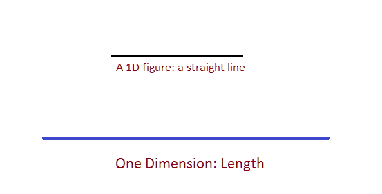
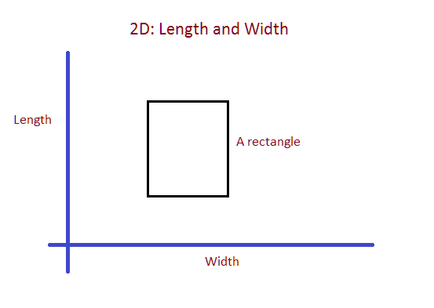
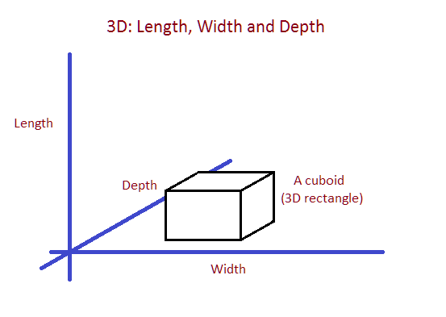
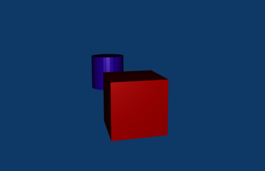
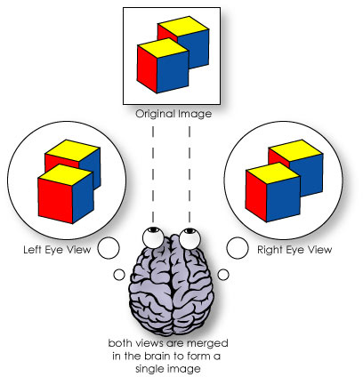
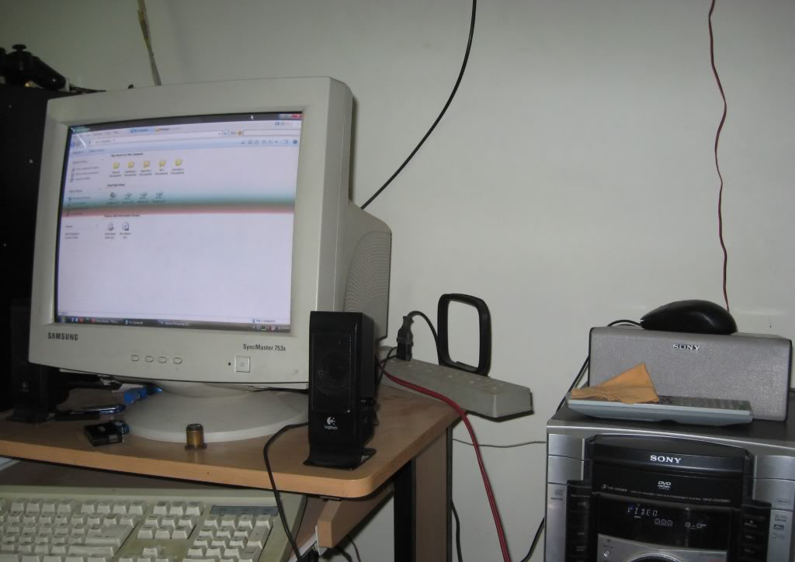
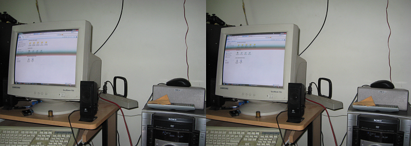
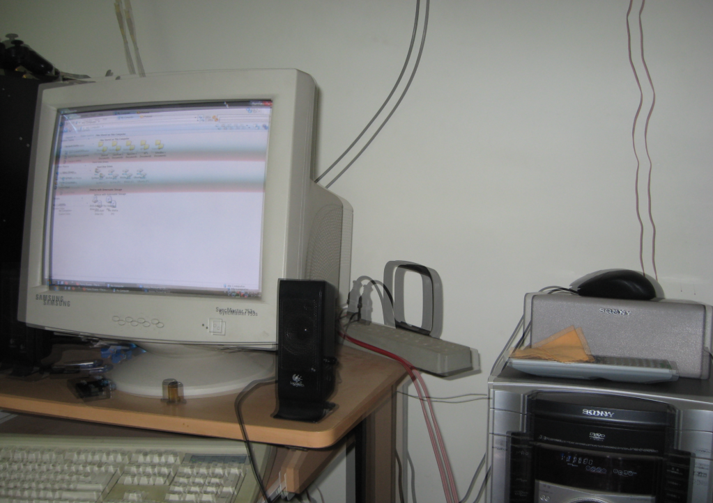
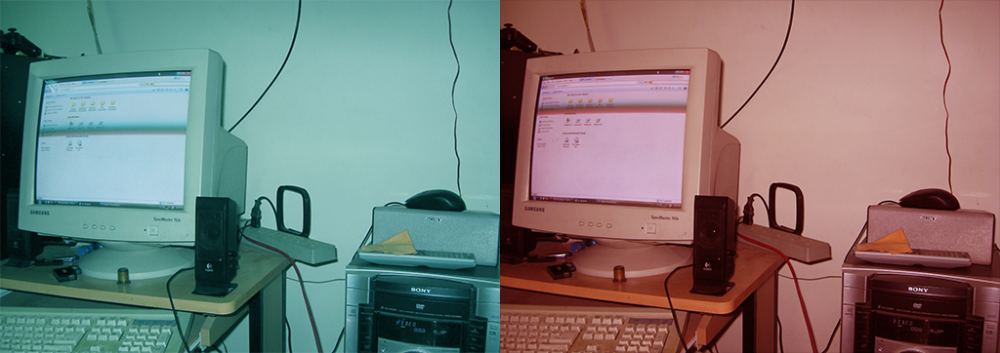
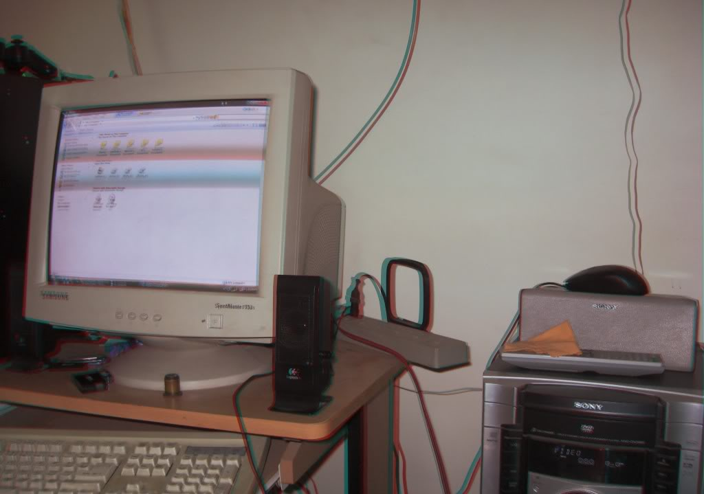

Stereoscopic 3D
Howdy, folks! It’s been a while since my last post. Well, I’ve been busy, but I’ve been lazier, hehe :D Anyway, most of you might have seen the Avatar movie, and in 3D too, probably. Wasn’t the experience amazing? I wouldn’t know, because I only got to see the 2D version ;_; Anyway, today I’m going to explain how 3D works.
Note: Though you will find instructions, this is by no means a tutorial and was never meant to be. It’s only a descriptive guide to help explain the process better.
So basically…
What is 3D?
3D stands for 3 Dimensions. What are dimensions? In the world of mathematics, physical space can be represented in up to 3 dimensions.
An example of a 1-dimensional figure would be a straight line. All measurements are limited to only one constraint: length.
 The only measurement is the length. Even a dot can be a 1D image (though, a dot is defined as a figure with zero dimensions… math is funny, eh?)
A square, a triangle or anything you can draw on a paper is 2-dimensional, meaning those figures can be represented with the help of length and width.
 Anything you can draw on a paper qualifies as a 2D image.
Now, a cube, a cone, a pyramid, a pizza, the Taj Mahal, even you, are 3-dimensional. These objects can be represented in 3 dimensions namely length, width and depth.
 All real objects are 3D.
Most of what you see in a book, on the computer screen and in the movies is 2D. Sure, you can make out the depth of the objects shown on the screen, but that’s because your mind simply concludes that there’s depth, based on what it already knows, even though it doesn’t feel the depth.
 You can tell that the cylinder is behind the cube even though you can’t “feel” it.
What is depth?
How does your mind perceive “depth”? Well, it’s simple. When you view something with both your eyes, what do you see? You see just one picture, or that’s what you think. In reality, you see two different pictures, one with each eye. Try it out, look at an object by closing your eyes alternately. You’ll realize that you’re seeing the object from two slightly different angles. This, ladies and gentlemen, is the key to 3D. When your eyes send their signals to the brain, it merges them together and calculates the depth in the image.
 This is how your mind sees two images as one, perceiving depth. Observe the slight variation in how each eye sees the image.
Now we know that the brain processes two separate images into one to get the sense of depth. How is this knowledge used to replicate depth through 2D media (computer screen for example)? Let’s explore that.
Replication
We have one main point to take away from the previous explanation: depth can only be simulated by feeding the brain two different views of the same scene. This is the reason we don’t feel depth when we watch something on the computer screen: both our eyes see the same image.
To simulate the sense of depth one has to find a way to view two different images at the same time through different eyes. Let’s discuss the process with a 3D picture, because I actually made a few.
So my aim is to make this scene 3D: 
I capture two photographs from slightly different angles. Each picture is how each of my eye sees it separately:  The target scene shot from two different angles. These two pictures represent the target as seen by the right and left eyes.
Now I superimpose (combine) them:  Both images super-imposed.
But when I look at this picture, I can see both the views with both the eyes. How do I make it so that one image reaches one eye and the other image reaches the other eye separately? The answer is that I use some form of filtering.
One simple thing I can do is, I use colour filtering. It means that I will colourize each picture with a different colour like this:
 Both images are colourized.
Now I’ll superimpose them again:
 I superimposed the two coloured images, this is the result.
OK, now the pic is ready. How do I see the pic? with these (or similar):
{kind=link}
Notice the colours. The left frame (from our point of view) has a red filter and the right frame has a cyan filter (have you noticed that they’re contrast colours?). Now when I look at the pic with these glasses on, my left eye will only see the red-colourized part of the pic and my right eye will only see the cyan-colourized part; mission accomplished! I get to enjoy the depth in the picture!
You can make a crude version of these “glasses”. You’ll need:
- Red and cyan sketch pens
- A colourless transparent sheet of paper or plastic (like a CD jewel case)
Just take your transparent material and colour them with the sketch pens, and you’re done :D Of course, you might not find the exact shade of colours, so you might still see double-images when you view the pic, but you will feel some depth.
Showtime!
This is how 3D movies are made. The movie is shot with two cameras with filters covering the lenses. They combine the two reels and publish the movie. You are given “3D glasses” which are nothing but filters, which separate the two images projected on the screen and send them to the respective eyes.
Of course, there’s another more refined form of filtering than the red-cyan / yellow-blue filters: the polarized lens filtering. These glasses have dark lenses and kinda feel like shades. These type of glasses are what you probably used when watching a 3D movie, not the old coloured ones. The advantage is obvious: no colour distortion. When you use coloured filtering, a lot of colour detail is lost, but with polarized lenses, you get the full spectrum. Polarized lenses are basically filters too and they involve some concepts of optics which I will not be explaining in this post.
Check out the pictures in this page to get a good idea of how 3D movies work. (Maybe it’s explained better there than here ;_;)
There are also other methods to simulate depth (like Chromadepth). Hopefully, someone will come up with a solution which lets us enjoy 3D in everyday television and computing :D
nVidia 3D Vision
nVidia has come up with a wonderful technology called nVidia 3D Vision. The concept is basically the same, but it applies it to 3D games and the result is amazing. Now that’s what I call innovation! Well, not exactly, it’s pretty obvious once you see it, but it’s about time someone implemented it!
Note that nVidia 3D vision has two forms: nVidia 3D Vision and nVidia 3D Vision Discover. 3D Vision Discover just lets us experience 3D, but in a crude way (using red-cyan glasses). The real thing uses shutter glasses and requires a 120Hz LCD monitor. Though, I’ve come across posts that claim it’s not a strict requirement. I enjoy my games using the red-cyan glasses since I don’t have an LCD monitor (let alone a 120Hz one!). There’s a rather annoying limitation: 3D vision only works in Windows Vista and above, not in XP. There might be some mods out there which enable 3D vision in XP, but I haven’t found them. If you know, drop a comment and I’ll add it here :)
If you happen to make or acquire 3D glasses but the colours don’t match with 3D vision defaults, you will still see double-images and it kind of hurts your eyes. I did a search in Google and found this registry hack which allows you to define the anaglyph colours. Here’s what you do. Open notepad and paste the following into the document:
Windows Registry Editor Version 5.00
[HKEY_LOCAL_MACHINE\SOFTWARE\NVIDIA Corporation\Global
\Stereo3D]
@=""
"LeftAnaglyphFilter"=dword:ffff0000
"RightAnaglyphFilter"=dword:ff00ffff
"StereoGamma"=dword:3f800000
Change the bolded parts in the lines:
“LeftAnaglyphFilter”=dword:ffff0000” and “RightAnaglyphFilter”=dword:ff00ffff”
to represent your desired colours in hex code. Don’t get confused if you don’t know what that is. Head over to this site and you can generate the hex codes for any colour. Of course, there are many other sites like this, just use google :)
After you’re done, save the file as “3dVision_color_mod.reg”. Run the file and accept the prompt, you’re done. If you didn’t backup the original colour codes, you can use the settings above, it’s the default setting.
Conclusion
If you ever acquire a set of 3D glasses, just do a google image search for “3D image” and you’ll get loads of fun pics to look at. Always remember that Google and Wikipedia are your friends (here’s the Wiki page about anaglyph images). Having explained this, I now have a question to all of you: can a person with only one eye experience simulated 3D? Let me know what you come up with!
That’s it for today, see you next time!
PS: Why did I use “colour” instead of “color”? Well, that’s the spelling I knew from childhood and that’s what I’m used to. It’s correct according to British English. I do use “color”, but only when I’m coding :P